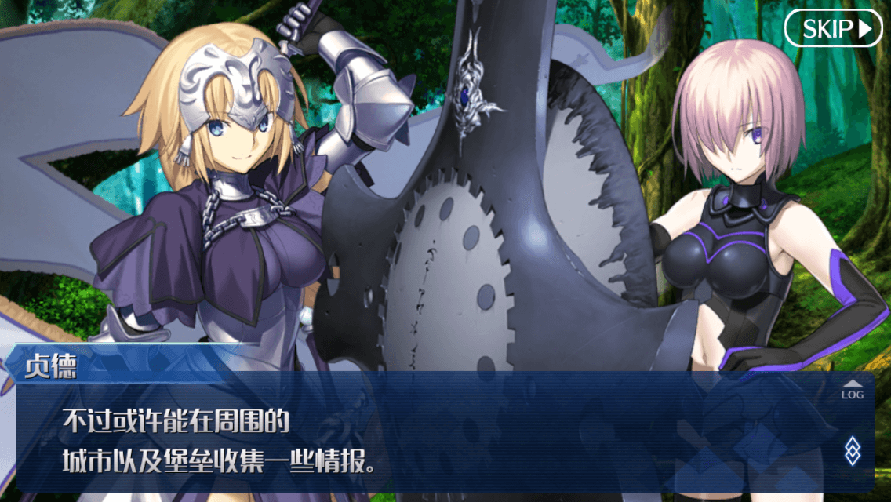
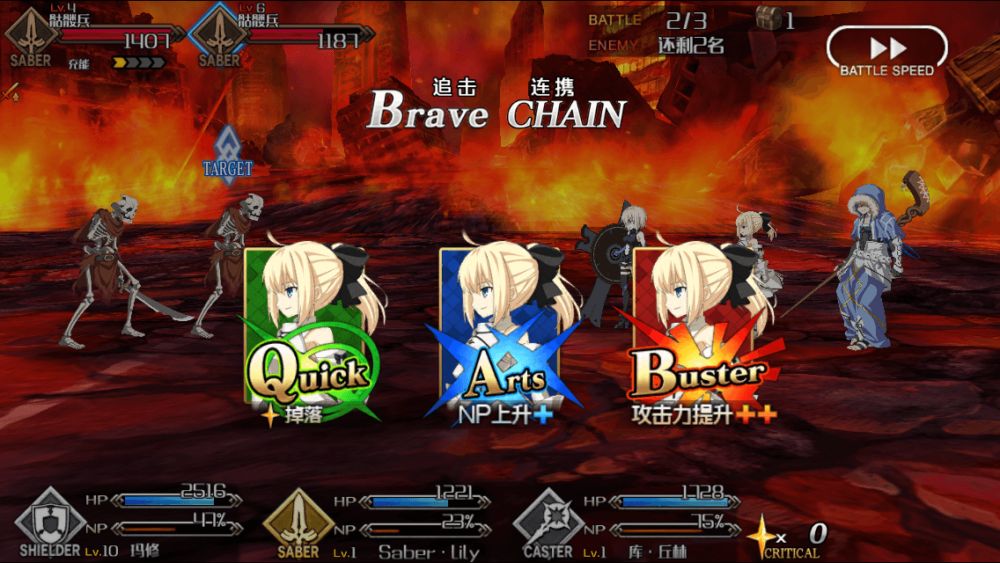
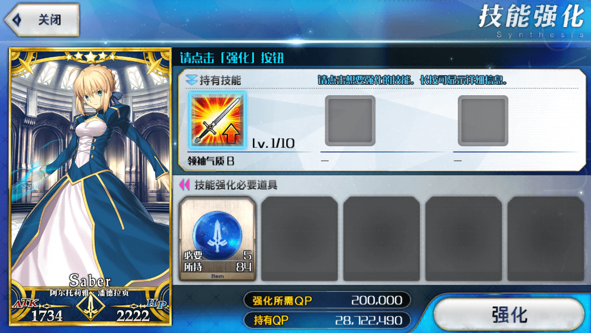
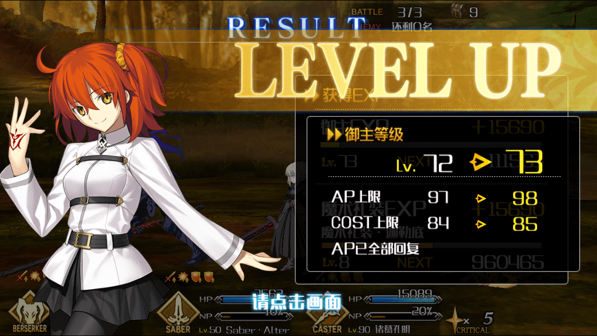

-
故事是通过可以说是Fate原点的文本游戏方式进行的。『命运 冠位指定』的故事是由包括原作者奈绪蘑菇在内的Fate系列作家阵容为本游戏全新撰写的，超过100万字超大量主线剧情。全7章的主线剧情会将人类史上的7个时代作为故事的舞台。同时登场的所有从者都有个人剧情。玩家可从中欣赏身为御主的您与从者的故事，或是从者们之间的故事。掌握着各从者剧情关键的，是身为御主的您与从者之间的羁绊。
 -
在『命运 冠位指定』中，战斗通过对从者下达的命令用指令卡来表现，通过回合制的形式展开指令战斗。战斗分为战术阶段与指令阶段，根据御主的选择，从者会分别发动攻击。己方攻击后，转为敌方行动。敌方行动后一回合结束。
 -
蕴含了从者力量的卡称为「圣肖像」。成为你同伴的从者们都会以圣肖像来表现。将不同从者进行合成，可让强化对象的从者获得经验值。通过将从者和战斗过程中获得的道具「碎片」进行合成，可完成灵基再临（突破极限），进化成更为强大的存在。
 -
不仅是从者，御主（玩家角色）也会成长。战斗胜利后获得的经验值（EXP）在累计到一定值后，御主的等级将会提升。等级提升后，行动力、COST（影响可编入队伍的从者。）、好友人数上限会提升。并且御主通过装备不同的魔术礼装，自身的技能（御主技能）也会发生变化。
